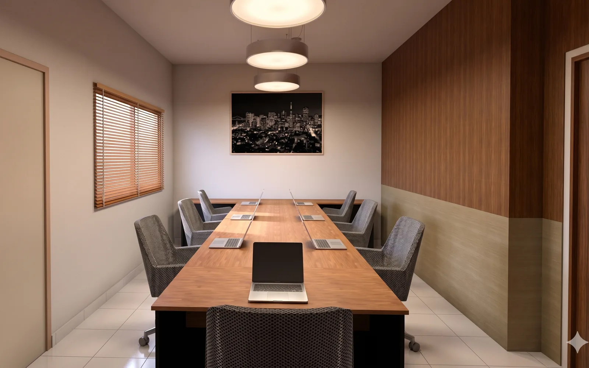
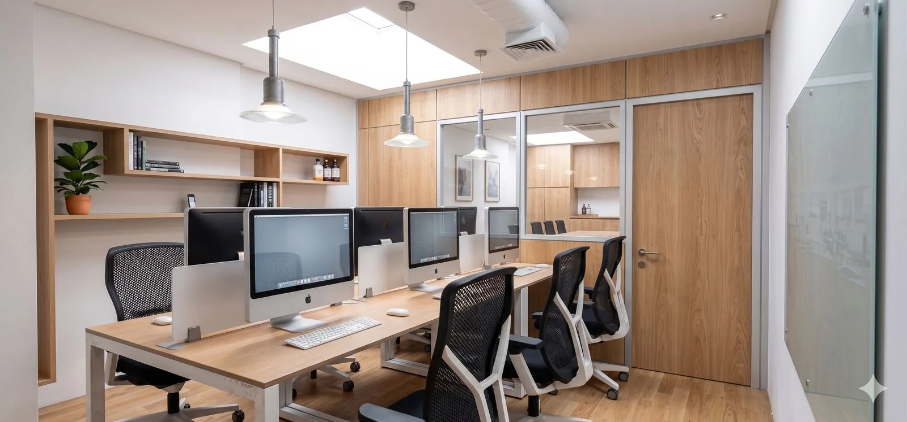
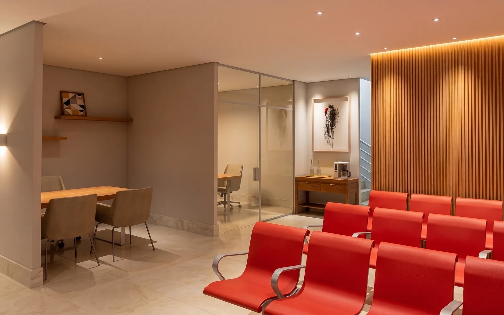

Comercial · advocacia
Alcântara & Carvalho
Ver imagens deste projeto na galeria do escritório.
Arquitetura comercial em Goiânia
Projetos para escritórios, lojas, recepções e sedes corporativas com foco em experiência, organização, materialidade e percepção de confiança.

Leitura de projeto
Em ambientes comerciais, arquitetura não é apenas estética. Ela organiza atendimento, fluxo de equipe, conforto do cliente, ergonomia e a percepção de autoridade da empresa.
A proposta é criar espaços comerciais em Goiânia com linguagem limpa, materiais coerentes e detalhes que transmitam profissionalismo sem exagero visual.
Quando faz sentido
Processo
O processo é conduzido para transformar referências soltas em decisões claras, imagens compreensíveis e informação útil para obra.
Leitura do público, rotina de atendimento, equipe, operação e imagem que a empresa precisa transmitir.
Organização de recepção, atendimento, áreas internas, circulação e pontos de apoio.
Definição de linguagem visual, marcenaria, iluminação e materiais alinhados ao posicionamento da marca.
Desenhos, imagens e informações para orientar obra, fornecedores e tomadas de decisão.
Projetos relacionados
Ver imagens deste projeto na galeria do escritório.

Ver imagens deste projeto na galeria do escritório.

Ver imagens deste projeto na galeria do escritório.
Dúvidas frequentes
Sim. A arquitetura deve dialogar com o posicionamento do negócio, mas sem transformar o espaço em cenário artificial.
Sim. Recepção, salas de atendimento, áreas de equipe e espaços de apoio podem ser desenvolvidos dentro do mesmo raciocínio de projeto.
Sim. Dependendo do caso, o escopo pode considerar aprovações, normas, acessibilidade, fluxos e demandas específicas do imóvel.
Contato
Envie uma mensagem pelo WhatsApp com o tipo de imóvel, cidade e o que você pretende desenvolver. O primeiro passo é entender o contexto.